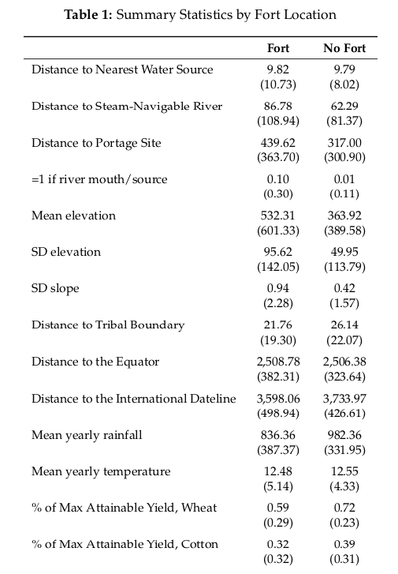

This blog post is part of my “JMP by Women in Econ” series where I summarize and review some of the job market papers written by women PhD candidates. The papers are selected from Jennifer Doleac’s Twitter thread. I am not reading this from the perspective of an economist, let alone of a job committee member: I just like reading cool articles that use observational data to tackle challenging research problems. :bowtie:
The article I’m reviewing in this blog post is by Chelsea E. Carter, “Forts and Frontier: The U.S. Army and the Spatial Distribution of Population.” One of the things that surprises me about other social science disciplines like economics and sociology is the range of social phenomena that they write about (I wasn’t expecting to read a paper about the American West!). Carter checks the robustness of her results with new empirical methods published in the last few years, so there’s a lot of methodological techniques to unpack in this paper. If you’re like me and want to know how to do things, you’ll be checking out the reference section of this paper constantly!

Me flipping to the reference section if I were reading this pdf hardcopy.
An excerpt from the abstract:
Exploiting a unique setting in United States military history, I study the origins and persistence in the spatial distribution of the US population. … [Military forts] predict initial increases in population and population density, indicative of their role as man-made factors in explaining the origins of local population patterns. Inceased population and density persist, on average, over a century after fort abandonment, indicative of path dependence at frontier fort locations.
The part of this excerpt that intrigues me the most is path dependence. I remember asking the professor in our research methodology seminar whether path dependence theory was falsifiable. I haven’t been able to answer this question, so I am curious as to how the author empirically tests the hypothesis.
Research puzzle
There are two observations that can be drawn about the population distribution in parts of the United States west of the Mississippi River.
- The American West has uneven distribution of population.
- The American West consists of large regions of homogenous geography.
{kind=link}
When asked how people have chosen where to live during the age of primitive technology, most people would guess that factors like geography, climate, and access to water transporation routes have determined which locations were attractive for permanent settlement. However, this piece of conventional wisdom doesn’t explain the two observations about the American frontier because if there are large stretches of land with similar topography, the distribution of population should be even. Moreover, a 2018 paper found that “only 35 percent of within-country variation [in population density] can be explained by attributes of physical geography.” Thus, Carter thinks that the pattern of population distribution in the American West too has been shaped by factors other than physical geography, in particular military forts.
Assuming that individuals prefer to live close to each other, we can imagine that the early settlers would have faced a spatial coordination problem.1 There is a body of historical research suggesting that military forts built by the U.S. Army served as a congregation point for the settlers. What’s interesting about Carter’s paper is that she is presenting an alternative theory to another paper, Bleakley and Lin (2012), that posits that ports “as a natural advantage” solved the same spatial coordination problem for the frontier settlers (6). Carter, in turn, argues that that man-made features like military forts were critical in establishing the population density differentials in the flat plains of the U.S. interior.
NB: This, I think, is a really good example of a research puzzle as opposed to a mere research question.🔍 I consider a research puzzle as a special kind of research question that takes the form of a contradiction between a theory and a set of observations. Here, Carter is pointing out that there is a contradiction between a theory (the conventional wisdom that geography determines population distribution) and a set of observations about the phenomena that should be explained by that theory. I don’t necessarily think that a paper inspired by a research puzzle is “better”—more scientifically relevant or intellectually interesting—than one that simply begins with a research question, but the former’s advantage is that its scientific relevancy is self-evident. When you write a research paper, you have to defend why your research question is worth investigating, even to an academic audience: you have to answer the “so what” question. This is not much of a problem for a research puzzle: because a scientific progress is built on a process of testing the falsifiability of extant theories, a contradiction between a theory and empirical observations is clearly a matter to be settled
Research design
There are four empirical questions investigated in this paper.
- Did military forts solve the initial spatial coordination problem?
- If so, did they have persistent effect on population distribution in nearby counties?
- Did military forts have an effect on the demographic composition of the settlers?
- If so, how long did this effect last?
The first two ask the where question while the last two ask the who question. In this blog post, I am only going to discuss the where questions because the way Carter answered these questions were more interesting to me.
For the first question, the treatment variable is military fort establishment by year 1890.2 County \(i\) is in the treatment group in year \(t\) if a fort was built that year but is in the control group for all other years. Carter tests other specification models where the treatment group is expanded to include the nearby counties. The outcome is either logged yearly population size or logged yearly population density. The unit of analysis for this question is county-year where the county boundary lines are harmonized to year 1900, meaning that the 1900 county border is held constant for all observed years.3
The second question is an empirical test of the path dependence hypothesis, and I think the paper is an instructive example of how to do it quantitatively. Because of the availability of fort data, Carter is able to use fort abandonment as the treatment variable. The treatment group consists of 102 counties in year 2010 with military forts that were decommissioned by the year 1890. The control group consists of nearby counties without any military forts. The outcome is the population size and population density reported in the 2010 Census. Note that unlike the first question, this question does not use panel data: the unit of analysis is a U.S. county in the year 2010.
For both questions, the biggest threat to treatment effect identification is selection bias. Given that forts are man-made features, there would have been some important factors that went into the selection of fort location site. Based on the works of historians and military scholars, Carter identifies four exogenous features.
- water availability as measured by distance to nearest water source, distance to steam-navigable river, distance to portage site, whether a river/water source intersect county boundary
- proximity to Native American tribes as measured by distance to nearest tribal boundary
- topography measured by mean elevation
- suitability for human habitat and crop growth and livestock proxied by latitudinal longitudinal geocoordinates; annual average temperature, rainfall, and output of rain-fed crops
Below is a snippet view of Table 1 describing the covariate balance between treatment and control groups. There is a clear difference between fort counties and non-fort counties with respect to distance to steam-navigable rivers, proximity to the nearest Native American tribe, and mean elevation.

This is actually a very crucial assumption and one that Carter herself addresses explicitly, for there is an NBER paper that studies how frontier experience fostered a culture of individualism in the U.S. interior and the region’s general disdain towards welfare redistribution.↩
The year 1890 is the cutoff point indicating U.S. frontier closure as railroad networks were beginning to expand towards the west by 1860.↩
See Hornbeck (2010) “Barbed Wire: Property Rights and Agricultural Development” footnote 21 for the logic behind this method. Carter cites Elizabeth Perlman, who has published zip files for county boundaries harmonized to a range of base decenial years along with the
arcpycode script on her website. I am excited to take a look at this myself to practice usingarcpy’s tools again.↩